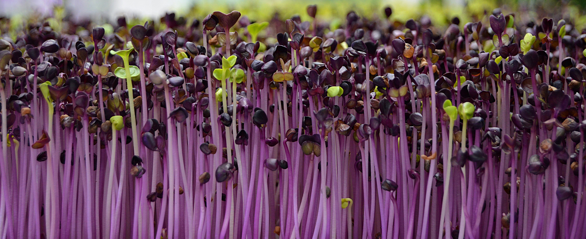
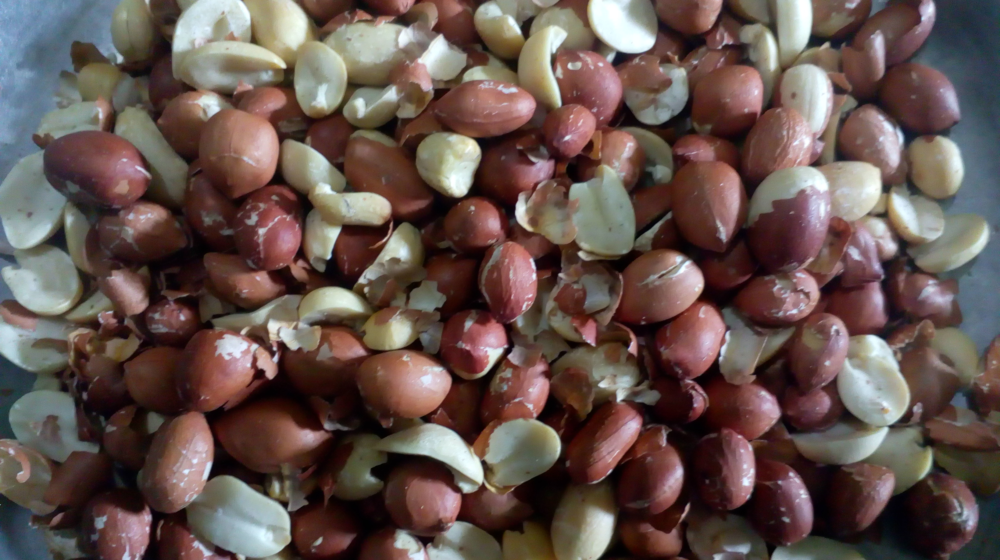

வாழை இலையில் சாப்பிட்டால் ஆயுள் கூடும்
பலதரப்பட்ட உணவுகளாக இருந்தாலும், நமது கலாச்சாரப்படி வாழை இலையில் சாப்பிடுவதுதான் ருசியானது. அதிலும் தலைவாழை இலை போட்டு விருந்து என்றாலே மகிழ்ச்சிதான்.

அனைவரது மனதிலும் நமது பாரம் பரியத்தின் மிச்சம் கொஞ்சம் கிடக்கிறது. அதற்க்கான வாய்ப்பு கிடைக்கும் போதெல்லாம் மனதில் ஆசை எழுகிறது. நாகரிகத்தின் பொயரால் நாம் சிதைத்த உணவு பழக்கங்களில் வாழை இலைக்கே முதலிடம்.
சல்பர்டை ஆக்சைடு, பாலிவினைல் குளோரைடு, டையாக்சின், எத்திலின், பாலிஸ்டிரின் போன்ற புற்று நோயை உண்டாக்கும் வேதிப்பொருட்கள் நிறைந்த பிளாஸ்டிக் தட்டுகள், ஹார்ட் பேக்குகள், பாலிதீன் சீட்டுகள் தான் நமது தட்டுகளாகிவிட்டன.
புது வீட்டில் பால் காய்ச்சி வாழை மரத்தை கட்டுவது முதல், திருமணம் போன்ற மங்களகரமான நிகழ்வுகள் அனைத்திற்கும் வாழை மரத்துக்கே முதலிடம். சாமிக்கு வாழையிலையில் படையல் போட்டு விட்டு, பிளாஸ்டிக் தட்டில் நாம் சாப்பிடுவதே மங்கள நிகழ்வுகளாகி விட்ட சூழ்நிலையில் நமது வயிற்றுக்குள் செல்லும் ஆபத்தை நாம் உணரவேண்டாமா?
7 நாட்களில் ஏழு கிலோ குறைய வேண்டுமா?
ஏழே நாட்களில் ஏழு கிலோ எடையைக் குறைக்க ஆசையா? அது நடக்காது என்று சிலர் நினைப்பதுண்டு. ஆனால் சரியான டயட்டை மேற்கொள்வதன் மூலம் நிச்சயம் ஏழே நாட்களில் ஏழு கிலோ உடல் எடையைக் குறைக்கலாம்.
அப்படி நீங்கள் உடல் எடையைக் குறைக்க என்ன செய்ய வேண்டுமென்று பார்ப்போம்:
இந்த மாதிரி எத்தனையோ உடல் எடை குறைய வழிமுறைகளைப் பின்பற்றி, அதனால், சிலருக்கு எந்த பலனும் கிடைத்திருக்காமல் இருக்கலாம். ஆனால் இங்கு குறிப்பிட்டது போல் நடந்தால், நிச்சயம் உடல் எடையில் நல்ல மாற்றம் தெரியும்.
முக்கியமாக எப்போதும் உடல் எடையைக் குறைக்க எந்த ஒரு முயற்சியை மேற்கொள்ளும் போதும். அதன் மீது முதலில் மனதில் நம்பிக்கை கொண்டு முயற்ச்சித்தால், நிச்சயம் அதன் பலனைப் பெறமுடியும்.
நாள் 1:
ஏழு நாட்களில் உடல் எடையைக் குறைக்க முயலும் போது முதல் நாளை ஆரோக்கியமாக தொடங்கவேண்டும். அதற்கு அந்நாள் முழுவதும் பழங்களை மட்டும் தான் சாப்பிடவேண்டும். எக்காரணம் கொண்டும், பழங்களைத் தவிர வேறு எதயும் உட்கொள்ளக் கூடாது. அதிலும் வாழைப்பழத்தைத் தவிர வேறு எந்த ஒரு பழத்தையும் பயமின்றி சாப்பிடலாம். அதற்காக தண்ணீர் குடிக்காமல் இருக்க வேண்டாம் தண்ணீர் எவ்வளவு வேண்டுமோ அவ்வளவு குடிக்கலாம்.

நாள் 2:
இரண்டாம் நாள் முழுவதும் காய்கறிகளை உட்கொள்ள வேண்டும். அதிலும் காய்கறிகளை வேக வைத்தோ அல்லது பச்சையாகவோ சாலட் செய்து சாப்பிட்டு வர வேண்டும். குறிப்பாக இப்படி செய்யும் போது மறக்காமல் 8 டம்ளர் தண்ணீரையும் குடிக்கவேண்டும்.
நாள் 3:
மூன்றாம் நாளில் பழங்கள் மற்றும் காய்கறிகள் இரண்டையுமே சேர்த்து சாப்பிட வேண்டும். அதிலும் காலையில் ஒரு பௌல் பழங்களை சாப்பிட்டால், மதியம் ஒரு பௌல் காய்கறிகளை சாலட்டையும், இரவில் பழங்கள் அல்லது காய்கறிகளையோ சாப்பிடலாம். ஆனால் இந்நாளில் வாழைப்பழத்தையும், உருளைக்கிழங்கையும் சேர்த்து கொள்ளக் கூடாது.
நாள் 4:
நான்காம் நாள் முழுவதும் வாழைப்பழம் மற்றும் பால் மட்டும் தான் சாப்பிட வேண்டும். அது ஸ்மூத்தி மில்க் ஷேக் என எப்படி வேண்டுமானாலும் செய்து சாப்பிடலாம். அதிலும் குறிப்பாக ஸ்கிம் செய்யப்பட்ட பாலைத் தான் சாப்பிட வேண்டும்.
நாள் 5:
இந் நாளில் ஒரு கப் சாதம் மட்டும் சாப்பிட வேண்டும். அத்துடன் தக்களியை சேர்த்துக் கொள்ள வேண்டும். அதிலும் குறிப்பாக 7 அல்லது 8 தக்காளியை வேக வைத்தோ அல்லது பச்சையாகவோ சாப்பிட வேண்டும். அதுவும் காலை முதல் மாலை வரை தக்காளியையும், இரவில் சாதத்தையும் சாப்பிடுவது நல்லது. ஆனால் இந்நாளில் குடிக்கும் தண்ணீரின் அளவை இன்னும் அதிகரிக்க வேண்டும். உதாரணமாக, 12 டம்ளர் தண்ணீர் குடித்தால், இந்நாளில் 15 டம்ளர் தண்ணீர் குடிக்க வேண்டும்.
நாள் 6:
ஆறாம் நாளில் மதிய வேளையில் ஒரு கப் சாதத்தையும் மற்ற நேரங்களில் காய்கறிகளை சாப்பிட வேண்டும். இப்படி சாப்பிட்டு வந்தால் உடல் எடையில் மாற்றத்தைக் காணலாம்.
நாள் 7:
இந்த நாளில் ஒரு கப் சாதத்துடன் அனைத்து காய்கறிகளையும் சேர்த்து சாப்பிடலாம். அதுமட்டுமின்றி, இந்நாளில் பழச்சாறுகளையும் குடிக்க வேண்டும். இதனால் உடலில் தங்கியுள்ள அனைத்து நச்சுக்களும் வெளியேறிவிடும். இது உடலில் நல்ல மாற்றத்தை வெளிப்படுத்தும்.
முளைக்கட்டிய தானியங்கள் சாப்பிட்டால் என்ன பலன்?
முளைக்கட்டிய தானியங்கள் என்பவை ஊட்டச்சத்துக்களும், புரதச்சத்துக்களும் நிறைந்த உணவுகளாகும். பருப்புகள், விதைகள், தானியங்கள் மற்றும் பீன்ஸ் ஆகியவற்றில் முலை கட்டி விடலாம். முளை கட்டப்படுவதால் தாதுக்கள், புரதங்கள், வைட்டமிங்கள் மற்றும் ஊட்டச்சத்து பொருட்கள் ஆகியவை சேகரிக்கப்படுகின்றன. முளை கட்டும் முறையால், செரிமானத்தில் பிரச்சினைகளை ஏற்ப்படுத்தும் பைரேட்ஸ் போன்ற எதிர் ஊட்டச்சத்துக்கள் குறைக்கப்படுகின்றன. இதனால் சிக்கலான ஸ்டார்ச்சுகள் உடைக்கப்பட்டு, செறிமானத்திற்க்கு உதவும் எண்ணற்ற என்ஸைம்கள் சுரக்கப்படுகின்றன. பருப்புகள் மற்றும் பிற தானியங்களை தண்ணீரில் நனைத்து வைப்பதையே முறை கட்டுதல் எங்கிறோம்.

பாதாம் போன்ற கொட்டைகள் போன்றவற்றை முளைகட்டி வைக்கும் போது, அதில் எண்ணற்ற ஊட்டச்சத்துக்கள் வெளிப்படுகின்றன. பாதாம் கொட்டைகளில் முளைகட்டும் போது, உடலின் கொழுப்பு அளவை குறைக்கக் கூடிய லைபேஸ் என்ற என்சைமை உருவாக்குகிறது. மணற்புல், முள்ளங்கி, ப்ராக்கோலி, தீவனப்புல் மற்றும் சோயா பீன்ஸ் போன்றவற்றை முளை கட்டும் போது, அவற்றிலிருந்து கிடைக்கும் சில தாவர சத்துக்கள் நமக்கு தேவையான நோய் எதிர்ப்பு சக்திகளை கொடுக்கின்றன.
வேகமாக ஆக்சிஜன் எதிர்பொருட்கள் மிகுந்திருக்கும் முளைகட்டப்பட்ட தானியங்களால் மூப்படையும் வேகம் மட்டுப்படும் என்பதை நம்ப முடிகிறதா? இது உண்மை தான். முழுமையான ஊட்டச்சத்துக்களை குறைவாகவும், எளிதாகவும் அடைய மிகவும் ஏற்பவையாக இருப்பவை முளைகட்டப்பட்ட தானியங்களே பச்சைப் பருப்பு, பெங்கால் பருப்பு, கொண்டைக்கடலை, கிட்னி பீன்ஸ், காய வைத்த பட்டானிகள் ஆகியவை நாடு முழுவதும் எளிதில் கிடைக்கக் கூடிய தானிய வகைகள் தான்.
மணற்புல் விதைகளி முளைக்கட்டப்படும் போது அவை மாங்கனீசு, வைட்டமின்களான ஏ, பி, சி, ஈ, கே ம்ற்றும் பிற முக்கியமான அகினோ அமிலங்களை உற்ப்பத்தி செய்து தருகின்றன. இங்கு அத்தகைய முளைக்கட்டிய தானியங்களின் அற்புதமான சில ஆரோக்கியமான பலங்களை கொடுத்துள்ளோம். அதைப் படித்து தெரிந்து கொள்ளுங்கள்.
என்சைம்கள் பச்சைக் காய்கறிகள் மற்றும் பழங்களை விட அதிகளவு என்சைம்கள் முளைக்கப்பட்ட தானியங்களில் உள்ளன என்று அறிவியல் ஆய்வுகளில் கண்டறிந்துள்ளனர். அதிக அளவில் வைட்டமின்கள், தாதுக்கள், அமினோ அமிலங்கள் மற்றும் அவசியமான கொழுப்பு அதிக புரதச்சத்து பீன்ஸ், கொட்டைகள், விதைகள் மற்றும் தானியங்களில் உள்ள புரதத்தின் தரம் மற்றும் அளவு ஆகியவை முளைக்கட்டப்பட்ட பின்னர் மேலும் அதிகறிக்கின்றன.
முளை கட்டிய தானியங்களில் உள்ள சில அமினோ அமிலங்கள் உங்களுக்கு நோய் எதிர்ப்பு சக்திக்கு ஊட்டமளிக்கின்றன. அதிகமான நார்ச்சத்து எடையைக் குறைக்கவும், செறிமானத்தை சீராக்கவும் உதவும் நார்ச்சத்துக்களை முளை கட்டுவதால் அதிகரிக்க முடியும். உடலில் உள்ள தேவையற்ற நச்சுப்பொருட்கள் மற்றும் கொழுப்புகளை வெளியெற்றுவதில் முளை கட்டிய தானியங்கள் உதவுகின்றன.
தானியங்கள் முளை கட்டுவதால் வைட்டமின்களின் அளவு மிகவும் அதிகறிக்கின்றன. குறிப்பாக வைட்டமின் ஏ, பி காம்ப்ளக்ஸ், சி மற்றும் ஈ ஆகியவை அதிகறிக்கின்றன. முளை கட்டிய தானியங்களில், சாதாரண தானியங்களில் உள்ளதை விட 20 மடங்கு அதிகமான அளவில் ஊட்டச்சத்துக்கள் அதிகறிக்கின்றன. அமினோ அமிலங்கள் போதிய அளவு உற்றபத்தி ஆகாமல் இருப்பது இன்று பலரும் எதிர் கொள்ளும் உடல் ரீதியான பிரச்சினையாகும்.
மிகவும் அவசியமான தாதுக்கள் நமது உடலால் உடனடியாக பயன்படுத்தப்படும் வகையில், பல்வேறு வடிவங்களினாலான தாதுக்களை முளை கட்டிய தானியங்கள் கொண்டுள்ளன. முளை கட்டும் போது, அல்கலைன் தாதுக்களான கால்சியம், மக்னீசியம் ஆகியவை புரதங்களுடன் சேர்ந்து செரிமானத்தின் போது உடலால் எளிதில் கிரகிக்கப்படுகின்றன. பாதுகாக்கும் மருந்துகள் மற்றும் பூச்சிக் கொள்ளிகளை தவிர்த்தல் விதைகள், தானியங்கள், கொட்டைகள் மற்றும் பீன்ஸ் போன்றவற்றை முளை கட்டும் செயலை வீட்டிலேயே சுத்தமான சூழலில் செய்ய முடியும். இதன் மூலம் கெட்டுப்போகாமல் இருக்க தெளிக்கப்படும் மருந்துகள் மற்றும் பூச்சுக் கொல்லிகளிடமிருந்து உங்கள் உணவுப் பொருட்கள் பாதுகாக்கப்படுகின்றன.
அல்சர் அவதியா...? சித்த மருத்துவத்தில் சிறப்பான தீர்வு!
இரைப்பையில் சுரக்கும் அமிலங்கள்தான். நாம் உண்ணும் உணவின் செரிமானத்திற்க்கு உதவுகின்றன. இரைப்பை மற்றும் சிறுகுடலின் உட்பகுதியை மூடி உள்ள சளிச்சவ்வுகள் இந்த அமிலங்களின் தாக்குதலில் இருந்து இரைப்பை மற்றும் சிறுகுடலைப் பாதுகாக்கின்றன.
இந்த சளிச்சவ்வுகள் சரிவர செயல்படாதபோது அல்லது சளிச்சவ்வுகளின் தொடச்சியில் இடைவெளி ஏற்படும்போது அமிலமானது இரைப்பை மற்றும் சிறுகுடலைப் பாதித்து சிவந்து வீக்கம் மற்றும் வலியுடன் கூடுய புண்ணை ஏற்படுத்துகிறது. புண் தீவிரமடையும்போது அது இரைப்பை மற்றும் சிறுகுடலில் துளையை ஏற்படுத்தி ரத்தக் கசிவையும் ஏற்படுத்துகிறது.
காரணங்கள்:
அல்சரை உண்டாக்குவதில் ஹெலிகோபேக்டர் பைலோரி என்ற கிருமி முக்கியப் பங்கு வகிக்கிறது. தவிர, காரம், மசாலா நிறைந்த உணவுகளாலும் மதுபானம் அருந்துதல், புகையிலைப் பழக்கம் மற்றும் புகைப்பிடித்தல் மற்றும் கணையத்தில் ஏற்படும் கட்டியினாலும், மருத்துவக் கதிரியக்கத்திற்கு உட்படுத்துவதாலும், மனக்கவலை மற்றும் பரப்பினாலும் வயிற்றுப் புண் ஏற்படுகிறது.
அறிகுறிகள்:
குமட்டல், வயிற்றின் மேல் பகுதியில் வலி, உணவு சாப்பிட்ட ஓரிரு மணி நேரத்திற்க்குள் பசி, நோய் தீவிரமடையும்போது ரத்தம் கலந்த அல்லது கறுப்பு நிறத்தில் மலம் கழித்தல், நெஞ்சு வலி, ரத்த வாந்தி, சோர்வு, உடல் எடை குறைதல் போன்றவை தென்படும்.
சித்த மருத்துவத்தில் ஏளிய தீர்வுவுகள்:
அரை ஸ்பூன் சுக்குத்தூளைக் கரும்புச்சாற்றில் காலை வேளையில் அருந்தலாம்.
ஏலம், அதிமதுரம், நெல்லி வற்றல், சந்தனம் வால்மிளகு இவற்றைச் சம அளவு எடுத்துப் பொடித்து, அதைப்போல இரண்டு பங்கு சர்க்கரை சேர்த்து 2 கிராம் வீதம் 3 வேளை உண்ணலாம்.
சீரகம், அதிமதுரம், தென்னம் பாளைப்பூ, சர்க்கரை சம அளவு எடுத்துப் பால்விட்டு அரைத்து சிறு எலுமிச்சை அளவு எடுத்துப் பாலில் கலந்து பருகலாம்.
கறிவேப்பிலை, சீரகம், மிளகு, மஞ்சள், திப்பிலி, சுக்கு சம அளவு எடுத்துப் பொடித்து அதில் அரை ஸ்பூன் எடுத்து மோரில் கலந்து பருகலாம்.
வால்மிள்கைப் பொடித்து அரை ஸ்பூன் எடுத்துப் பாலில் கல்ந்து உண்ணலாம்.
பிரண்டையின் இளந்தண்டை இலையுடன் உலர்த்திப் பொடித்து சம அளவு சுக்குத் தூள், மிளகுத் தூள் கலந்து அதில் அரை ஸ்பூன் எடுத்து வெண்ணெயில் கலந்து உண்ணலாம்.
கைப்பிடி அளவு வெண்நொச்சி இலையில் கல் உப்பைப் போட்டு வறுத்து அடுப்பை அணைத்துவிட்டு சூடு இருக்கும்போதே அதில் மோரை ஊற்றி, தெளிவை இறுத்துப் பருகலாம்.
மணத்தக்காளிக் கீரையைப் பாசிப் பயறு, நெய் சேர்த்துச் சமைத்து உண்ணலாம்.
சில்லிக்கீரை, பொன்னாங்கண்ணிக் கீரை இவற்றை அரைத்து, சுண்டைக்காய் அளவு எடுத்துக் கருப்பட்டி சேர்த்து வெள்ளாட்டுப் பாலில் கலந்து உண்ணலாம்.
பெருஞ்சீரகம், சுக்கு, மிளகு, திப்பிலி சம அளவு எடுத்துப் பொரித்து 2 கிராம் எடுத்து உணவிற்குப் பின் உண்ணலாம்.
சேர்க்க வேண்டியவை:
கோஸ், கேரட், வெண்பூசணி, தர்பூசணி, பப்பாளி, ஆப்பிள், நாவல்வழம், மாதுளம்பழம், வாழைப்பழம், தயிர், மோர், இள நுங்கு.
தவிர்க்க வேண்டியவை:
அதிகக் காரம், பொரித்த உணவுகள், அசைவ உணவுகள், தேன், புளி, மதுப் பழக்கம், புகையிலை, புகைப்பிடித்தல்.
கடைப்பிடிக்க வேண்டியவை:
1.காலை உணவைத் தவிர்க்கக் கூடாது.
2.உறிய நேரத்தில் உணவை உண்ண வேண்டும்.
3.பரபரப்பைத் தவிர்த்தல் அவசியம்.
4.திணமும் குறைந்தது 2 லிட்டர் தண்ணீர் அருந்த வேண்டும்.
5.சரியான நேரத்துக்குத் தூக்கம் அவசியம்.
குழந்தையின் கண் பார்வை மேம்பட:
நம் உடலில் உள்ள முக்கியமான உறுப்புகளில் முதன்மையானது கண்கள். ஒருவரை வர்ணிக்கும் போதும், ஓவியம் வரையும் போதும் கூட கண்களிலிருந்து தான் ஆரம்பிப்போம் அப்படிப்பட்ட கண்களை பாதுகாக்க நாம் அதிக சிரத்தை எடுத்துக் கொள்வது இயல்பு தான். ஆனால் குழந்தைகளுக்கு? பெற்றோர்கள் தானே பாதுகாக வேண்டும்.
குழந்தையின் கண்பார்வையை மேம்படுத்த கண்களில் அறுவை சிகிச்சை மட்டும் தான் செய்ய வேண்டும் என்று பல பெற்றோர்கள் நினைக்கிறார்கள் ஆனால் இதற்கு பல இயற்கை வழிமுறைகளும் இருக்கிறது என்பது தான் உண்மை இயற்கை வழிமுறைகள் எந்த வித பக்க விளைவுகளையும் ஏற்படுத்தாமல் மிகவும் பாதுகாப்பானதாகவும் சிறந்ததாகவும் இருக்கும் மேலும் செயற்கை முறைகளை கையாளுவதை விட இயற்கை முறை தான் பல நாட்களுக்கு நீடித்து நிலைக்கும் இப்போது குழந்தையின் கண் பார்வையை வளப்படுத்தும் சில வழிமுறைகளை பார்ப்போம்.
தரமுள்ள கருப்பு கண்ணாடி
வெயிலில் இருந்து குழந்தையின் பாதுகாக்க கருப்புக் கண்ணாடியை அணியச் செய்யுங்கள் அவை குழந்தையின் கண் பார்வையை மேம்படுத்த பயன்படும் குழந்தைகள் வெயிலில் அதிக நேரம் இருக்கும் போது சூரியனில் இருந்து வெளிவரும் புற ஊதாக்கதிர்வீச்சு கண் பார்வைக்கு பாதிப்பை ஏற்படுத்தும் அதனால் தரமுள்ள கருப்புக் கண்ணாடியை வெளியே செல்லும் போது குழந்தைகள் போட்டுக் கொள்கிறார்களா என்பதை பார்த்துக் கொள்ள வேண்டும் மேலும் காற்று அதிகமாக இருக்கும் காலத்திலும் கண்ணாடியை போட்டுக் கொள்ள அறிவுறுத்த வேண்டும் இதனால் தூசியை போல் கண்களுக்கு தீங்கு விளைவிக்கின்ற பொருட்களிருந்து கண்களை பாதுக்காக்கலாம்.
கண்களுக்கு பயிற்சி:
குழந்தைகளுடன் சேர்ந்து சில கண் பயிற்சியில் ஈடுபட்டு அவர்களுக்கு ஒரு நல்ல எடுத்துக்காட்டாக இருங்கள் இந்த பயிற்சிகள் கண் பார்வையை மேம்படுத்தும்
கண்களை கழுவவும்
குழந்தைகள் காலை எழுந்தவுடன் அவர்களின் வாயை கொப்பளிக்கச் செய்து கண்களை மூடச் சொல்லவும் பின் ஒரு ஐந்து நிமிடங்களுக்கு அவர்களின் கண்களின் மேல் தண்ணீரை கொண்டு நன்றாக கழுவச் செய்யவும் முக்கியமாக கண்களை கழுவ பயன்படுத்தும் தண்ணீர் சூடாக இல்லாமல் பார்த்துக் கொள்ளவும்.
தூக்கம்
நீண்ட நேரம் இரவில் விழித்திருப்பது கண்களுக்கு நல்ல தல்ல ஒரு வேளை குழந்தை நீண்ட நேரம் விழித்திருந்தால் ஒரு மணி நேரத்திற்கு ஒரு முறை ஒரு கப் தண்ணீர் குடிக்கும் படி செய்ய வேண்டும்.
மலங்கழித்தல்
மலச்சிக்கல் கண் பார்வையை குறைக்கும் அத்துடன் மன அழுத்தம் கவலை கோபம் ஆர்வம் போன்றவைகளும் கண் பார்வையை பாதிக்கும் அதனால் தினமும் குழந்தையை 4 முதல் 5 லிட்டர் வரை தண்ணீர் குடிக்க வையுங்கள்.
உணவு முறை.
தினமும் குழந்தைக்கு பச்சை வேர்க்கோசு மற்றும் காரட் சாறு கொடுங்கள் இதனுடன் சேர்த்து பாலில் ஊற வைத்த பாதாம் ஏலக்காய் பொடி கலந்த பால் பழங்கள் பச்சை காய்கறிகள் போன்றவைகளையும் குழந்தைக்கு கொடுக்க வேண்டும் கண்களின் சத்துக்கும் திறனுக்கும் காரணமாக விளங்குவது வைட்டமின் ஏ அதனால் குழந்தைகளுக்கு வைட்டமின் ஏ உள்ள உணவுகள் சாப்பிட கொடுக்கவும்.
விளையாட்டில் ஈடுபடுத்தவும்.
குழந்தைகள் மணிக்கணக்கில் தொலைக்காட்சி கணினி முன் அமர்ந்திருக்கிறார்களா ...ஆம் என்றால் குழந்தைக்கு பிரச்சனை ஏற்பட போவது உறுதி இந்த செயல்கள் யாவும் கண்களை ஒய்வெடுக்கச் செய்யாது உடம்பில் உள்ள மற்றப் பகுதிகளை போல ஒரே இலக்கில் 10-15 நொடி வரை கண் பார்வையை செலுத்தினால் கண்களுக்கு அயர்ச்சி ஏற்படும் இந்த அழுத்தம் சிறிது காலம் கழித்து கிட்டப்பார்வை சிதறல் பார்வை போன்ற பிரச்சனையாக வளர்ந்து நிற்கும் அதனால் அதிக நேரம் கணினி அல்லது தொலைக்காட்சி முன் அமர்வதை விட வெளியில் சென்று விளையாட குழந்தையை அறிவுறுத்தவும்.
காய்கறி மற்றும் பழங்கள்.
கல்லீரலில் அதிக அளவு நச்சுத்தன்மை இருந்தால் கண் பார்வை மங்கும் இன்றைய நவீன வாழ்க்கை முறை உடல் ஆரோக்கியத்திற்கு மிகவும் பாதிப்பை உண்டாக்குகிறது. இப்போதெல்லாம் குழந்தைகள் அதிகமாக ஜங்க் உணவை அதிகம் சாப்பிடுகிறார்கள். அதனை தவிர்த்து பழங்கள் மற்றும் காய்கறிகளை உண்ண செய்யவும்.
சிரிப்பு..
வாய் விட்டு சிரிப்பதில் சந்தோஷத்திற்குரிய ஹார்மோன்கள் உற்பத்தியாகும். அதனால் உடம்பில் உள்ள தசைகள் அனைத்தும் அமைதி பெரும் இது கண்களின் தசைகளையும் சேர்ந்ததே அதனால் குழந்தை எந்நேரமும் சந்தோஷமாக சிரித்துக் கொண்டே இருக்குமாறு பார்த்துக் கொள்ளுங்கள்.
நிலக்கடலை நித்தம் நித்தம் உண்போம்:
நிலக்கடலையில் போலிக் அமிலம் அதிகம் இருப்பதால் இனப்பெருக்கம் விரைவாக நடக்கிறது. எனவே, நிலக் கடலையை தொடர்ந்து சாப்பிடும் பெண்களின் கர்பப்பை சீராக செயல்படுவதுடன் கர்பப்பைக் கட்டிகள், நீர்க்கட்டிகள் ஏற்படாதது மட்டுமல்லாது குழந்தைப் பேறும் உடன் உண்டாகும்.
நீரிழிவு நோயைத் தடுக்கும்:
நிலக்கடலையில் மாங்கனீஸ் சத்து நிறைய உள்ளது. மாங்கனீஸ் சத்துமாவுச்சத்து மற்றும் கொழுப்புகள் மாற்றத்தில் முக்கிய பங்காற்றுகிறது. நாம் உண்ணும் உணவில் இருந்து கால்சியம் நமது உடலுக்கு கிடைக்கவும் பயன்படுகிறது. குறிப்பாக பெண்கள் நிலக்கடலையை தொடர்ந்து சாப்பிட்டு வந்தால் எழும்புத்துளை நோய் வராமல் பாதுகாத்துக் கொள்ளலாம்.
பித்தப் பை கல்லைக் கரைக்கும்:
நிலக்கடலையை தினமும் 30 கிராம் அளவுக்கு சாப்பிட்டு வந்தால் பித்தப் பை கல் உருவாவதைத் தடுக்க முடியும். 20 வருடம் தொடர்ந்து நடத்தப்பட்ட ஆய்வில் இந்த தகவல் தெரியவந்துள்ளது.
இதயம் காக்கும்:
நிலக்கடலை சாப்பிட்டால் எடை போடும் என்று நாம் நினைக்கிறோம். உண்மையல்ல. மாறாக உடல் எடை அதிகரிக்காமல் இருக்க வேண்டும் என்று நினைப்பவர்களும் நிலக்கடலை சாப்பிடலாம். நிலக்கடலையில் ரெஸ்வரெட்ரால் என்ற சத்து நிறைந்துள்ளது. இது இதய வால்வுகளை பாதுகாக்கிறது. இதய நோய்கள் வருவதையும் தடுக்கிறது. இதுவே மிகச் சிறந்த ஆண்டி ஆக்சிடெண்டாக திகழ்கிறது.
இளமையை பராமரிக்கும்:
இது இளமையை பராமரிக்க பெரிதும் உதவுகிறது. நிலக்கடலையில் பாலிபீனால்ஸ் என்ற ஆண்டி ஆக்சிடெண்ட் உள்ளது. இது நமக்கு நோய்வருவதை தடுப்பதுடன் இளமையை பராமரிக்கவும் பயன்படுகிறது.
ஞாபக சக்தி அதிகரிக்கும்:
நிலக்கடலை மூளை வளர்ச்சிக்கு நல்ல டானிக் போன்றது. நிலக்கடலையில் மூளை வளர்ச்சிக்கு பயன்படும் விட்டமின் 3 நியாசின் உள்ளது. இது மூளை வளர்ச்சிக்கும் ஞாபக சக்திக்கும் பெரிதும் பயனளிக்கிறது. ரத்த ஓட்டத்தையும் சீராக்குகிறது.
மன அழுத்தம் போக்கும்:
நிலக்கடலையில் பரிப்டோபான் என்ற முக்கிய அமினோ அமிலம் நிறைந்துள்ளது. இந்த வகை அமினோ அமிலம் செரட் டோனின் என்ற மூளையை உற்சாகப்படுத்தும். உயிர் வேதிப் பொருள் உற்ப்பத்திக்கு பயன்படுகிறது. செரட்டோனின் மூளை நரம்புகளை தூண்டுகிறது. மன அழுத்தத்தை போக்குகிறது.
கொழுப்பை குறைக்கும்:
தலைப்பை படிப்பவர்களுக்கு ஆச்சரியம் ஏற்படலாம். ஆனால் அதுதான் உண்மை. நிலக்கடலை சாப்பிட்டால் கொழுப்பு சத்து அதிகமாகும் என்று நம்மில் பலரும் நினைத்திருப்போம். ஆனால், அதில் உண்மையில்லை மாறாக மனிதனுக்கு நன்மை செய்யும் கொழுப்பு தான் நிலக்கடலையில் உள்ளது. நிலக்கடலையில் உள்ள தாமிரம் மற்றும் துத்தநாக சத்தானது நமது உடலின் தீமை செய்யும் கொழுப்பை குறைத்து நன்மை செய்யும் கொழுப்பை அதிகமாக்குகிறது. 100 கிராம் நிலக்கடலையில் 24 கிராம் மோனோ அன் சாச்சுரேட்டேட் வகை கொழுப்பு உள்ளது. பாலி அன் சாச்சுரேட்டேடு 16 கிராம் உள்ளது.
ஒரு கல்... சிறுநீரக கல்லுக்கு தீர்வு..
சுத்தமில்லாத தண்ணீர் பழைய கெட்டுப் போன உணவுகள் அளவுக்கு அதிகமாக புளித்த பழங்களை உண்பவர்களுக்கு சிறுநீரகத்தில் கற்கள் உண்டாகும் மர்ம உறுப்பில் வலி ஏற்பட்டு உடல் வீக்கம் கண்டு ஒரு இடத்தில் உட்கார விடாது வயிறு புரட்டி வாந்தி உண்டாகி மூச்சித்திணறி வயிறு ஊத ஆரம்பிக்கும் என சித்தர் யூகி பல்லாயிரம் ஆண்டுகளுக்கு முன் தனது வைத்திய சிந்தாமணி நூலில் குறிப்பிட்டுள்ளார்.
வயிற்றின் மேல் அறையில் இரண்டு பக்கங்களிலும் பக்கத்திற்கு ஒன்றாக் இரண்டு சிறுநீரகங்கள் உள்ளன. இவை திரவக் கழிவுகளை சுத்தம் செய்வதுடன் உடலின் ரத்த அழுத்தத்தையும் சமநிலையில் வைக்கின்றன. உடலின் திரவ சமநிலையை கட்டுப்படுத்துவதிலும் பெரும்பாங்கு வகிக்கின்றன. சிறுநீர் உப்புத் தன்மை மற்றும் சற்று காரத்தன்மை உடையது. அதன் உப்புத் தன்மையில் மாற்றம் ஏற்படும் போது சிறுநீரகத்தில் சிறு சிறு துகள்களாக உப்புக்களும் புரதப் பொருட்களும் உறைந்து சிறுநீரக கற்களாக மாறுகின்றன.
இவை சிறுநீர்ப் பாதையில் தடையை ஏற்படுத்தி கால் வயிறு முகத்தில் வீக்கம் உண்டாகின்றன. சிறுநீரகம், சிறுநீர்ப்பாதை, சிறுநீர்ப்பை சிறுநீர் தாரை ஆகிய இடங்களில் கற்கள் தேங்கும் போதோ அல்லது பயணம் செய்யும் போதோ எந்தப் பக்கத்தில் கல் இருக்கின்றதோ அந்த பகுதியிலிருந்து கீழ் நோக்கி வயிறு, முதுகு, தொடை மேல்பகுதி, தொடை மற்றும் விதைப்பையில் கடுமையான வலி ஏற்படும் இந்த வலியுடன் குளிர், நடுக்கம், காய்ச்சல், குமட்டல், வாந்தி, ஏற்பட்டு வலியுடன் சிறுநீர் அடைத்துக் கொண்டு வெளியேறும் சிவப்பு அடர்த்தியான மஞ்சள் அல்லது முட்டை வெண்கருவை கரைத்தது போன்ற நிறத்தில் வெளியேறும் சில நேரத்தில் ரத்தம் கலந்து வரலாம்.
நாம் உண்ணும் உணாவு மற்றும் குடிநீரில் ஏற்படும் மாற்றம் போதுமான அளவு தண்ணீர் அருந்தாமல் சிறுநீரை அடக்குதலால் கற்கள் உண்டாகின்றன சுண்ணாம்பு கற்கள் அமினோ அமில கற்கள் யூரிக் அமில கற்கள் மற்றும் கிருமித்தொற்றால் அழுகிய கற்கள் உண்டாகின்றன.
10 முதல் 20 வயதுக்கு உட்பட்டவர்கள் சிறு குழந்தைகளுக்கு சுண்ணாம்பு கற்கள் அதிகமாக உண்டாகின்றன. இவற்றுடன் ஆக்ஸ்லேட், பாஸ்பேட், கார்பனேட் போன்ற உப்புகள் சேர்ந்து சுண்ணாம்புக் கலவை கற்களாக மாறுகின்றன.
தினமும் 2 கிராம் உப்பு..
அளவுக்கதிகமாக அடிக்கடி கீரை உணவுகளை மட்டும் உட்கொள்ளுதல், விட்டமின் சி நிறைந்த பழங்களை அடிக்கடி சாப்பிடுவதால் நாள்பட்ட குடல் புண், குடலில் கிருமி வளர்ச்சி காரணமாக சுண்ணாம்புக்கலவைக் கற்கள் உருவாகின்றன.
உணவில் உப்பு அதிகம் சாப்பிடுவதாலும் கற்கள் அதிகரிக்கின்றன ஒவ்வொருவரும் தினமும் 2முதல் 4கிராம் அளவு மட்டுமே உப்பை உணவில் சேர்த்து கொள்ள வேண்டும் அமினோ அமில மாறுப்பாட்டால் உண்டாகும் கற்கள் பெரும்பாலும் ஒரே குடும்பத்தைச் சேர்ந்த அனைவருக்கும் உண்டாகின்றன. மரபணுரீதியாக இந்த கற்கள் ஆண், பெண் இருவரையுமே பாதிக்கின்றன கிருமித்தொற்றால் தோன்றும் கற்கள் பெண்களைத் தான் அதிகம் பாதிக்கின்றன.
உள்ளங்கை அளவு இறைச்சி..
புளித்துப் போன புரத உணவுகளை அதிகம் உட்கொள்வதால் யூரிக் அமில கற்கள் தோன்றுகின்றன. தினமும் 350 கிராம் புரத உணவு போதும் உள்ளங்கை அளவிற்கு மேல் இறைச்சி சாப்பிட வேண்டாம். ஒரு லிட்டருக்கும் குறைவாக தண்ணீர் அருந்துபவர்களே சிறுநீரக கற்களின் பாதிப்புக்கு ஆளாகின்றனர். இவர்கள் சிறுநீர் கழிக்கும் போது வடிக்கட்டியில் பிடித்துப் பார்த்தால் கற்கள் வெளியேறுவது தெரியும். அல்ட்ரா சவுண்ட் ஸ்கேன், எக்ஸ்ரே, சிறுநீர், ரத்தப்பரிசோதனை மூலம் சிறுநீர்கக் கற்களை கண்டறியலாம்.
ஒரு முறை கற்கள் வந்தால் ஏழாண்டுகளுக்கு பிறகு மீண்டும் ஏற்பட வாய்ப்புண்டு. ஒரு கைப்பிடி நெருஞ்சில் செடியை எடுத்து கழுவி சிறுதுண்டுகளாக்கி அரைலிட்டர் தண்ணீரில் கொதிக்கவிட்டு 124 மில்லியாக சுண்ட வைத்து வடிகட்ட வேண்டும். தினம் காலை, மாலை வெறும் வயிற்றில் குடித்தால் கற்கள் கரைந்து வெளியேறும் சிறுபீளை செடி, நெருஞ்சிமுள், பெருநெருஞ்சில், வெள்ளரி, விதையை உலர்த்தி ஒன்றிரண்டாக இடிக்க வேண்டும். இதை நீரில் கொதிக்கவைத்து தினமும் ஒரு வேளை குடித்து வந்தால் கற்கள் தூளாகி வெளியேறும்.
என்ன வகை உணவுகள்..
சிறுநீரைப் பெருக்கக்கூடிய பார்லிக் கஞ்சி, சுரைக்காய், பூசணி, புடலை, வெள்ளரி, பரங்கி, முள்ளங்கி, வாழைத்தண்டு, சவ்சவ், தரைப்பசலையை உணவில் அதிகம் சேர்க்க வேண்டும். குறிப்பாக காலையில் எழுந்ததும் 250 மில்லி தண்ணீரை வெறும் வயிற்றில் அருந்த வேண்டும். நீர் கலந்த எலுமிச்சைச் சாறு பருகலாம். ஒரு நாளைக்கு 250 மில்லி பால் அருந்தலாம் 200 கிராம் புளித்த தயிர் சாப்பிடலாம். தானியங்களை உடைத்து பொடியாக்குவதை விட முழுமையாக வேகவைத்து சாப்பிடலாம்.
தவிர்க்க வேண்டியது.
டீ, ஆரஞ்சு, சாத்துக்குடி, திராட்சை, ஜூஸ், பாட்டில் குளிர்பானங்கள், செயற்கை பழச்சாற்றை தவிர்க்க வேண்டும் பழைய ஆறிய உணவு, கீரை, கீழங்கு சூப், அசைவ சூப், சாஸ், குருமா, ஜாம், பப்ஸ், சிப்ஸ், தவிர்க்க வேண்டும் கீரை , பீட்ருட், உருளைக்கிழங்கு, சர்க்கரைவள்ளிக்கிழங்கு, மரவள்ளிக்கிழங்கு, கொட்டை வகைகள் சாக்லேட், ரஸ்க், உலர்ந்த பழங்களில் உள்ள ஆக்ஸ்லேட், கற்கள் அதிகப்படுத்துகின்றன.
தைராய்டு சுரப்பியின் அதிக பணி உடல் எடையை குறைப்பதற்காக செய்யப்படும் அறுவை சிகிச்சை கவுட் எனப்படும் மூட்டுவலி, சிறுநீர் பாதையில் புண் புராஸ்டேட் கோள வீக்கத்தாலும் கற்கள் உருவாகலாம். இதை கண்டுபிடிக்க மருத்துவப் பரிசோதனை அவசியம்.
மில்லி மீட்டருக்கு குறைவான கற்கள் தானாகவே வெளியேறிவிடும். அதற்கு மேற்பட்ட கற்கள் சிறுநீர்ப் பாதையில் அடைப்பை ஏற்படுத்தலாம். வாட்டர் மற்றும் சுத்திக்கரிக்கப்பட்ட தண்ணீரில் சுண்ணாம்புச்சத்து குறைவாக இருப்பதால் அதை அருந்துபவர்களுக்கு சுண்ணாம்பு கற்கள் அதிக்கரிக்கின்றன.
சாதாரண நிலத்தடி நீரை கொதிக்கவைத்து ஆறிய பின் குடிப்பதே நல்லது கண்ணாடி போன்றது நமது உடம்பு நல்ல உணவு உண்டு அதனை மென்மையாய்க் காப்போம்.
பல உடல் பிரச்சனைகளை சரி செய்யும் ஒரே மருந்து திரிபலா...
இன்றைய காலத்தில் கடினமாக உழைப்பதை விட புத்திசாலித்தனமாக வேலையை முடிப்பதே மிகவும் முக்கியம். அதைப்போல் நமது பிரச்சனைகளை சரியாகத் தீர்க்கும் விதமாக எதையும் கையாள வேண்டியுள்ளது. இதற்கு உடலும் உள்ளமும் முழுத்தகுதியுடன் இருந்தால் தான் இவை சாத்தியமாகும். உடலும் உள்ளமும் முழுத்தகுதியுடன் விளங்குவதற்கு அன்றாட வேலைகளை ஒரு ஒழுங்கு முறையுடன் செய்து வர வேண்டும்.
முறையான மற்றும் கட்டுப்பாடான உணவுப்பழக்கத்தை பின்பற்ற வேண்டும் வாழ்க்கையை உடலளவில் மிகவும் வசதியான முறையில் வாழ்கிறோம். ஆனால் மனதளவில் மிகவும் அழுத்தம் நிறைந்த வாழ்க்கையை தான் வாழ்கிறோம். இத்தகைய வாழ்க்கை முறை சீக்கிரமாக முதுமையாக உணர வைத்து விடும் அல்லது பல நோய்களுக்கு வழிவகுக்கும்.
திரிபலா என்றால் என்ன... திரிபலா என்பது பாரம்பரிய ஆயுர்வேத மருந்து இது ஒரு ரசாயனமாகவும் காயகல்பமாகவும் கருதப்படுகிறது. மூன்று மூலிகைகள் சேர்ந்த கூட்டுப்பொருள் தான் திரிபலா அம்மூன்று மூலிகைகளாவன நெல்லிக்காய், கடுக்காய் மற்றும் தான்றிக்காய் ஆகும்.
திரிபலா எப்படி நமக்கு உதவுகின்றது... திரிபலா என்பது அற்புதமான ஆயுர்வேத மருத்துவ தயாரிப்பு ஆகும். ஆயுர்வேத மருத்துவர்களால் உலகம் முழுவதும் பரவலாக எந்த நோய்க்கும் மருந்தாகப் பயன்படுத்தப்படுவது திரிபலா. சர்க சம்ஹிதா என்னும் ஆயுர்வேத நூலில் முதல் அத்தியாயத்திலேயே திரிபலாவைப் பற்றிக் குறிப்பிடப்பட்டுள்ளது என்பது ஆச்சரியமான விஷயமாகும் நெல்லிக்காய், கடுக்காய், மற்றும் தான்றிக்காய் ஆகிய இம்மூன்றின் கலவையானது அற்புதமான காயகல்பமாகி தேவர்களின் அமிர்தத்தினைப் போல் எந்த ஒரு வியாதியையும் தீர்க்கும் அற்புத சக்தியைப் பெற்றுள்ளது.
நோய் எதிர்ப்புச் சக்தி..
ஆயுர்வேதத்தில் திரிபலா என்பது இளமையை பாதுகாக்கும் என்று குறிப்பிட்டுள்ளது. அதாவது நமக்கு முதமைத் தன்மையை நீக்கி இளமைத் தன்மையை அதிகரிக்கச் செய்யும் என்று பொருள் இது உடல் ஆரோக்கியத்தினை அதிகரிக்கவும் நோய் எதிர்ப்புச் சக்தியைக் கூட்டவும் உதவுகிறது. ஆரோக்கியமான வாழ்வில் நோய் எதிர்ப்புச் சக்தி என்பது ஒரு முக்கியமான அங்கமாகும். இது எப்போதுமே அதிகமாகவே இருக்க வேண்டும் நமது உடலில் இயற்கையாகவே அமைந்திருக்கும் தடுப்பு அரண்களைத் தாண்டி உடலின் உள்ளே நுழையும் கிருமிகளை எதிர்த்துப் போராடும் ஆன்டிபாடி எனப்படும் நோய் எதிர்ப்பு சக்திகளை அதிக அளவில் உற்பத்தி செய்ய இந்த திரிபலா உதவுகிறது.
ஆன்டி-ஆக்ஸிடன்ட்..
உடலில் செல்களுக்கிடையில் நடைபெறும் வளர்ச்சிதை மாற்றத்தில் சக்தி வாய்ந்த ஆன்டி-ஆக்ஸிடன்டாக திரிபலா செயலாற்றுகிறது. நமக்கு முதுமையைத் தரும் முக்கியமான காரணியான கட்டற்ற காரணிகளை உற்பத்தி செய்யும் வாய்ப்பைக் குறைக்கிறது. மேலும் செல்கள் முறையாகச் செயல்படுவதற்கு முக்கியமாகத் தேவைப்படும் மைட்டோகாண்டிரியா கோல்கை உறுப்புகள் உட்கரு ஆகியவை சிறப்பாகச் செயல்படுவதையும் திரிபலா தூண்டுகிறது.
செரிமானமின்மை..
செரிமானக் கோளாறுகளை திரிபலா அற்புதமாக குணப்படுத்துகிறது. அதிலும் உணவுப்பாதையில் மலத்தினை வெளித்தள்ளும் குடலியக்கத்தை சீராக செயல்பட வைக்கிறது. மேலும் இரத்தத்தில் உள்ள கொழுப்பினை கரைக்க தேவைப்படும் பைல் திரவத்தினை கல்லீரலிலிருந்து சுரக்கவும் உதவுகிறது. உணவுப்பாதையில் தேவையான கார அமிலநிலையை தேவையான நிலையில் பேணுவதற்கும் துணை புரிகிறது.
மலச்சிக்கல்..
திரிபலா ஒரு சிறந்த குடல் சுத்திகரிப்பானாகச் செயல்படுகிறது. மலச்சிக்கலுக்கு அதிகமாகப் பரிந்துரைக்கப்படும் இயற்கை மருந்து திரிபலாவாகும். உடலிலுள்ள நச்சுப் பொருட்களை நீக்கும் நச்சு நீக்கியாகவும் இது செயலாற்றுகிறது. சிறந்த மலமிளக்கியாகவும் பயன்படுகிறது.
வயிற்றுப் பூச்சிகளும் தொற்றுகளும்..
வயிற்றில் பூச்சி வளர்வதையும் தொற்றுக்களையும் கட்டுப்படுத்தும் சக்தி வாய்ந்தது தான் திரிபலா குறிப்பாக வயிற்றிலிருந்து நாடாப்புழுக்களையும் , வ்ளையப்புழுக்களையும் வெளியே அகற்றுவதற்கு பெரிதும் உதவுகிறது. மேலும் உடலில் பூச்சிகளும் நுண்கிருமிகளும் வளர்வதற்கு உதவாத நச்சு நிலையை உடலில் பேணுவதற்கு திரிபலா உதவுகிறது.
இரத்தச் சோகை...
இரத்தத்தில் இரத்த சிவப்பு அணுக்களின் எண்ணிக்கையினை அதிகரிக்க திரிபலா உதவுகிறது. இதன் மூலம் இரத்த சோகை என்னும் நோயைத் தீர்க்க முடியும் இரத்த சோகை என்பது இரத்தத்தில் ஹீமோகுளோபின் எனப்படும் இரத்த சிவப்பு அணுக்களின் அள்வு குறைந்து காணப்படும் நிலையாகும்.
சர்க்கரை நோய்..
திரிபலா சர்க்கரை நோயைக் கட்டுப்படுத்துவதில் சிறப்பு மிக்கது. நமது கணையத்தினைத் தூண்டி இன்சுலினை சுரக்கச் செய்கிறது கணையத்தில்தான் இன்சுலினைச் சுரக்கும் லாங்கர்ஹான் திட்டுக்கள் எனப்படும் சுரப்பிகள் உள்ளன.
மேலும் உடலில் குளுக்கோஸின் அளவை சமநிலையில் பேணுவதில் பெரும் பொறுப்பு வகிப்பது இன்சுலின் ஆகும் மேலும் திரிபலா கசப்புச் சுவையுடன் இருப்பதால் சர்க்கரை நோயின் ஒரு நிலையான ஹைப்பர்கிளைசீமியா எனப்படும் அதிக சர்க்கரை நிலையில் இதனை எடுத்துக் கொள்வது சிறப்பானது.
உடல்பருமன்:
இயல்பை விட உடல் பருமனானவர்கள் திரிபலாவை உட்கொள்வது மிகவும் பயன்தரும். இதனுடைய மருத்துவக் குணத்தினால் உடலிலுள்ள கொழுப்பின் அளவினைக் குறைக்க முடியும். நமது உடலில் கொழுப்பு படிவதற்குக் காரணமான அடிபோஸ் செல்களைக் குறிவைத்து செயல்படுவதால் கொழுப்பின் அளவு குறைகிறது. இதன் மூலம் உடல் பருமன் கட்டுப்படுத்தப்படுகிறது.
சருமப் பிரச்சனை..
இது இரத்தத்தினைச் சுத்தம் செய்து இரத்தத்திலுள்ள நச்சுப் பொருட்களை வெளியேற்றும் தன்மை கொண்டிருப்பதால் சரும நோய்களுக்கான மருத்துவத்தில் பெரும் பங்காற்றுகிறது இரத்தத்தினைச் சுத்திகரிக்கும் தன்மை கொண்டிருப்பதால் தொற்று நோய்களையும் தீர்க்கும் குணம் கொண்டுள்ளது.
சுவாசக் கோளாறுகள்..
சுவாசப் பாதையிலுள்ள அடைப்புகளை நீக்கி சீரான சுவாசம் ஏற்பட பெரிதும் உதவுகிறது சைனஸ் என்னும் நோயைத் தீர்க்கும் மருந்தாகவும் இது செயல்படுகிறது. மேலும் நமது சுவாசப் பாதையிலுள்ள சளியில் பாக்டீரியாக்கள் வளராமலும் இது தடுக்கிறது.
தலைவலி..
தலைவலிக்கு நிவாரணமாகவும் திரிபலா பயன்படுகிறது குறிப்பாக வளர்சிதை மாற்றத்தின் இடையூறுகளால் உண்டாகும் தலைவலிக்கு சிறப்பான நிவாரணத்தை அளிக்கிறது.
புற்று நோய்..
புதுடில்லியிலுள்ள ஜவஹர்லால் நேரு பல்கலைக்கழகத்தில் மேற்கொண்ட சமீபத்திய ஆய்வுகளின் படி திரிபலாவுக்கு புற்றுநோயைக் குணப்படுத்தும் திறன் இருப்பது கண்டுபிடிக்கப்பட்டுள்ளது புற்று நோய் செல்களில் மைட்டேடிக் நிலையில் ஸ்பிண்டில் வடிவத்தோற்றம் உண்டாவதைக் குறைக்க உதவி செய்கிறது அதன் மூலம் புற்று நோய் செல்களில் மெடாஸ்டேடிஸ் வளரும் அபாயத்தையும் குறைக்கிறது.
கீரையின் மகத்துவம்
மனித இனத்திற்காக இயற்கை கொடுத்துள்ள என்னற்ற நன்மைகளை தருவது கீரைகள் என்றால் மிகையல்ல. கீரைகளைப் பச்சையாகவோ, பக்குவப்படுத்தியோ உண்டு வந்தால் ஒரு மனிதன் எல்லா வகைச் சத்துக்களையும் பெற்று உடல் நலத்தோடு பல்லாண்டு உயிர் வாழந்து விட முடியும்.
உண்மையில் சல சாதாரணக் கீரைகள் இறைச்சி, மீன், முட்டை போன்றவற்றை விட சத்தில் உயர்வாகத் திகழ்கின்றன. புலால் உணவுகள் வெறும் சத்தான உணவாக மட்டுமே பயன்படுகின்றன. ஆனால் கீரைகளோ சத்தான உணவாக மட்டுமல்லாமல் அருமருந்தாகவும் விளங்குகின்றன. சிலவகை நோய்களை கீரைகள் உண்டே குணப்படுத்திக் கொள்ள முடியும்.
கீரைகள் வாய்க்குச் சுவையாகவும், உடலுக்கு உணவாகவும் அமைவதோடு மன நலத்தைக் காக்கும் ஒரு சாத்வீக உணவாகத் திகழ்கின்றன. அன்றாட உணவில் கீரைவகைகளைத் தவறாமல் சேர்த்துக் கொள்ளும் மக்களே நீண்ட ஆயுளைப் பெற முடியும்.நோய் வராமல் தடுக்கும் சக்தியும், நோய் வந்தால் விலக்கிக் குணப்படுத்தும் ஆற்றலும், உடலை எப்போதும் நலத்தோடு வைத்திருக்கும் திறனும் எல்லா கீரைகளுக்கும் உண்டு.
வாதநோய், காமாலை, இரத்தக் கொதிப்பு, சிறுநீரக வியாதிகள், உப்புச் சத்து மிகைபடல், சர்க்கரைச் சத்து மிகுதல் போன்ற நோய்களுக்குக் கீரைகள் மிகச் சிறந்த மருந்தாக பயன்படுகின்றன. மனித உடல் வளர்ச்சிக்கு ஏற்ற உணவு சத்துக்களான புரதம், கொழுப்பு, மாவு ஆகிய சத்துக்கள் எல்லாவகைக் கீரைகளிலும் உள்ளன.
தாது உப்புக்களாகிய சுண்ணம்புச் சத்து, மணிச் சத்து, கந்தகச் சத்து, சாம்பல் சத்து முதலியன எல்லா வகைக் கீரைகளிலும் நிறைந்துள்ளன. உடல் வளர்ச்சிக்கும் பராமரிப்புக்கும் தேவையான உயிர் சத்துக்களாகிய வைட்டமின் A, B12, B2, C ஆகியவை கீரைகளில் உள்ளன.
கீரைகளில் பலவகைகள்:
கீரைகளில் எண்ணிறைந்த வகைகள் இருந்த போதிலும் அவைகளை கீழ்கண்ட ஆறுவகைகளாக பிரிக்கலாம்.
1. குத்துச் செடி வகைக்கீரை 2.செடி வகைக் கீரை 3. கொடி வகைக் கீரை 4. மணமுள்ள கிலைவகைக் கீரை 5. கிழங்கினக் கீரை 6. மரவகைக் கீரை1. குத்துச் செடி வகைக்கீரை:
இவ்வகைக் கீரைச் செடிகள் நிலத்தில் சிறிது உயரம் மட்டுமே வளரக்கூடியது, உயரம் மிகக் குறைவாக வளர்ந்து அதிகமான கிளைகளுடன் காணப்படும். இதனை மிகச் சிறு செடிகள் அல்லது குத்துச் செடிகள் என்று கூறலாம். அரைக்கீரை, சிறுகீரை, வட்டச் சாரணை முதலியன இவ்வகையைச் சார்ந்தவை.
2.செடி வகைக் கீரை:
இவ்வகைக் கீரைகள் பொதுவாக ஒரடி முதல் மூன்றடி வரை வளரக் கூடியவை. மூன்றடிக்கும் மேலும் சில வகைகள் வளர்கின்றன. பொதுவாக, இவ்வகைச் செடிகளில் இலையை மட்டும் பறித்து உணவாக பயன்படுத்துகிறோம். மூக்கிரட்டைக் கீரை, வேளைக் கீரை, துத்திக் கீரை முதலியன இவ்வகைச் செடிகளுக்கு உதாரணமாகும்.
3. கொடி வகைக் கீரை:
இவ்வகைக் கீரைகள் பொதுவாக வேலிகள் மீது கொடியாகப் படர்கின்றன. இதில் சிலவகை நிலத்தில் சிறிது உயரம் வளர்ந்து, பிறகு நிலத்திலேயே படர்பவை. இவைகளையும் செடிவகைக் கீரைகளைப் போலவே பறித்து உணவாக பயன்படுத்துகிறோம். முடக்கத்தான் கீரை, கோவைக் கீரை, கொடிப் பசலைக் கீரை, வட்டச் சாரணை முதலியன் இவ்வகையைச் சார்ந்தவை.
4. மணமுள்ள கிலைவகைக் கீரை:
இந்த வகைக் கீரைகள் உணவுக்கு மனமூட்டுவதாக விளங்குகின்றன. கீரையாக மட்டுமின்றி இவைகள் உணவுக்கு மணம் கொடுக்கும் பொருளாக பயன்படுகின்றன. பொதுவாக இவ்வகைக் கீரைகளில் மணம் கொடுக்கும் எண்ணெய்ச் சத்துக்கள் நிறைந்திருக்கும் கொத்துமல்லி, சதக்குப்பை, புதினாக் கீரை ஆகியவைகள் இவ்வகையில் அடங்கும்.
5. கிழங்கினக் கீரை:
இவ்வகைக் கீரைகள் கிழங்குகளிருந்து பெறப்படுபவை. பொதுவாக கிழ்ங்கிற்காக மட்டுமே பயிரிடப்படும் கிழ்ங்குகளிலிருந்து உற்பத்தியாகக் கூடியவை. இவைகளில் கிழங்குகள் உணவுக்காகப் பயன்படுத்துவதோடு, இலைகளும் கீரை உணவாகப் பயன்படுகின்றன. முள்ளங்கிக் கீரை, சேப்பங்கீரை, பீட்ரூட் கீரை, காரட் கீரை, போன்றவை இவ்வகைக்கு எடுத்துக் காட்டுக்ளாகும்.
6. மரவகைக் கீரை:
மரவகைக் கீரைகள் என்றும் நிலைத்திருந்து ஆண்டு முழுவதும் பலன் கொடுக்கக் கூடியவை. பல ஆண்டுகள் நிலைத்து பூமியில் வாழக்கூடியவை. முருங்கைக் கீரை, அகத்திக் கீரை, கறிவேப்பிலைக் கீரை முதலியன மரவகையைச் சார்ந்த கீரைகளாகும்.